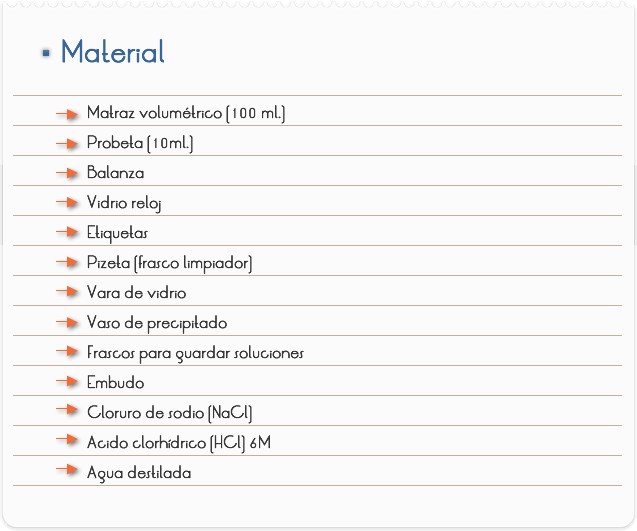
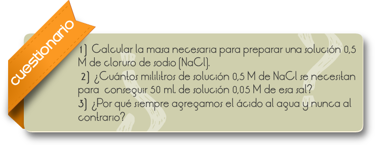
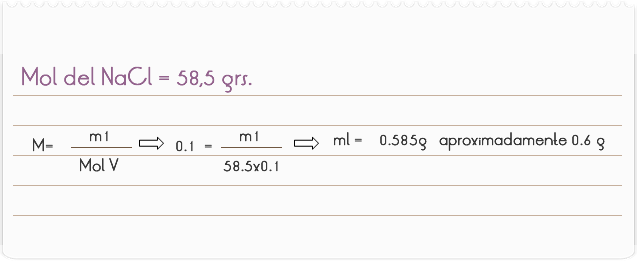
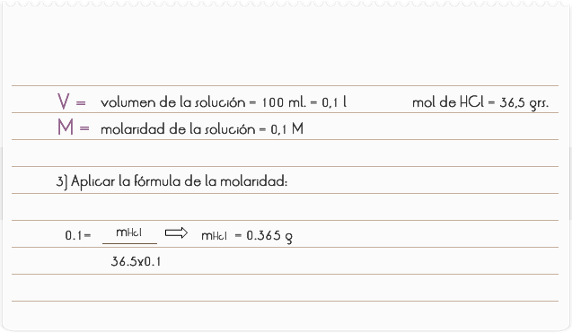
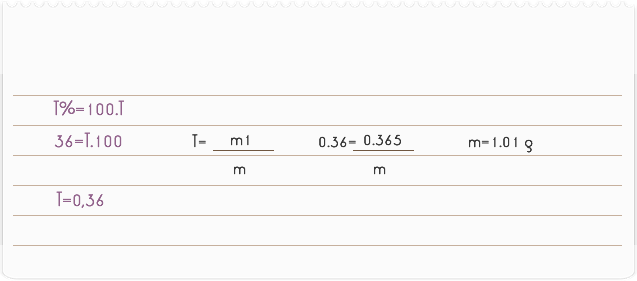
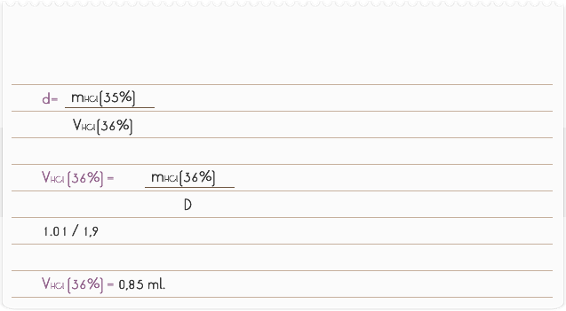

Introducción
La concentración es la magnitud química que expresa la cantidad de un elemento o un compuesto por unidad de volumen. En el SI se emplean las unidades mol•m-3. Cada sustancia tiene una solubilidad que es la cantidad máxima de soluto que puede disolverse en una disolución, y depende de condiciones como la temperatura, presión, y otras substancias disueltas o en suspensión
En Química, para expresar cuantitativamente la proporción entre un soluto y el disolvente en una disolución se emplean distintas unidades: molaridad, normalidad, formalidad, porcentaje en peso, porcentaje en volumen, fracción molar, partes por millón, partes por billón, partes por trillón, etc. También se puede expresar cualitativamente empleando términos como diluido, para bajas concentraciones, o concentrado, para altas.
Objetivo
Preparar una solución de concentración y volúmenes conocidos y una solución diluida.

- Preparación De Una Solución 0,1 M De Cloruro De Sodio
1) Pesar aproximadamente 0,6 gr. de cloruro de sodio
2) Colocar en un matraz volumétrico
3) Agregar 60 ml. de agua destilada
4) Agitar hasta la completa disolución de la sal.
5) Agregar agua destilada hasta la marca de 100 ml. del balón.
6) Pasar para un frasco con la ayuda de un embudo
7) Rotular – Solución de Cloruro de sodio (NaCl) 0,1 M.
- Disolución De La Solución De Cloruro De Sodio (0,1 M)
1) Medir en una probeta 20 ml. de la solución preparada en la Parte I
2) Transferirlo para un balón volumétrico.
3) Completar el volumen con agua destilada hasta 100 ml.
4) Sacudirlo.
5) Transferir para un frasco y rotular – Solución de Cloruro de Sodio (NaCl) 0,02 M.
- Preparación De Una Solución Diluida De Ácido Fuerte
1) Colocar 30 ml. de agua en un vaso de precipitado.
2) Medir en una probeta aproximadamente 0,85 ml. de ácido clorhídrico
3) Agregar, cuidadosamente, con auxilio del agitador de vidrio, el agua contenida en el vaso de precipitado.
NOTA: Siempre agregue el ácido al agua y nunca al contrario.
4) Agitar la solución y pasar este volumen para un balón volumétrico, usando el embudo y con ayuda de la vara de vidrio.
5) Completar el volumen del balón con agua destilada y sacudirlo.
6) Transferir la solución a un frasco y rotular – Ácido Clorhídrico (HCl) – 0,1 M.

RESULTADOS Y CONCLUSIONES:
Por definición, una solución 1 M de cloruro de sodio contiene 58,5 grs. de esta sal (1 mol) en un litro de solución. Entonces, para calcular la masa necesaria para preparar una solución 0,1 M de cloruro de sodio (NaCl), aplicamos la fórmula de la Molaridad dados:

PARTE 2
Para determinar la nueva molaridad de la solución obtenida después de la dilución, utilizar la fórmula:
Mi. Vi = Mf . Vf
Mi = molaridad de la solución inicial
Vi = volumen de la solución inicial
Mf = molaridad de la solución final (diluida)
Vf = volumen de la solución final
ENTONCES:
0,1. 20 = Mf . 100
Mf = 0,02 M ó 0,02 moles/L
PARTE 3
Para poder realizar los cálculos de la cantidad de volumen necesaria para la preparación de la solución con la molaridad deseada, necesitamos enseñarle al alumno a saber hacer la interpretación de los datos expresados en el rótulo del reactivo en estudio.
Considerar un frasco en cuyo rótulo se lee: HCI 36,5% e d = 1,19 grs./ml. Esto equivale a decir que la concentración de HCI es igual a 35% y que su densidad absoluta es de 1,19 gr./ml.
Debemos calcular que el volumen de ese ácido clorhídrico va a ser utilizado en la preparación de 100 ml. de solución 0,1 M del mismo ácido.

Esa masa es la cantidad de HCl puro, necesaria para la obtención de 100 ml. de solución 0,1 M.
PARTE 4
No disponemos de HCl puro, nuestra solución contiene 36% de ese ácido (verificar en el rótulo). Debe aplicarse la fórmula del título:

PARTE 5
Como el HCl concentrado es muy volátil y corrosivo se vuelve inconveniente y difícil pesarlo. A través de la fórmula de la densidad, transformar ese pesaje en medida de volumen.

Así, 0,85ml. de HCl a 36% corresponden a 1.01 grs. de HCl a 36%, y contiene 0,365 grs. De HCl puro. Ese volumen diluido hasta 100 ml. suministra la solución 0,1 M.